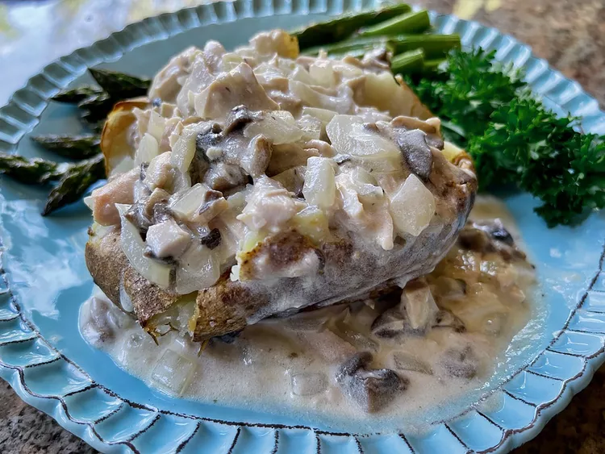

Chicken Stroganoff-Stuffed Baked Potatoes
Leftover chicken is key to these chicken stroganoff-stuffed baked potatoes, a creamy mushroom and chicken sauce served over baked potatoes. Add a crusty bread and a green vegetable, or a salad. We like it with roasted asparagus that goes into the oven about 20 minutes before the potatoes are done. Don’t you love to get double duty from your oven?

Ingredients
Potatoes:
- 4 (8ounce) baking potatoes
- 2 teaspoons olive oil
- 1/4 teaspoon sea salt, or to taste
Stroganoff Sauce:
- 2 tablespoons unsalted butter
- 1 onion, diced
- 8 ounces mushrooms, diced
- 1/2 teaspoon salt, or to taste
- 1/4 teaspoon freshly ground black pepper, or to taste
- 2 cloves garlic, minced
- 1/2 cup dry white wine
- 2 tablespoons all-purpose flour
- 1 1/2 cups chicken broth or stock
- 1 tablespoon Dijon mustard
- 2 cups chopped cooked chicken
- 1 cup sour cream
- 2 tablespoons minced fresh parsley (optional)
Directions
- Preheat the oven to 400 degrees F (200 degrees C). Scrub potatoes and dry with a clean towel. Oil potato skins with olive oil and sprinkle with sea salt.
- Bake directly on a rack in the center of the preheated oven until tender when pierced with a fork, about 55 minutes.
- In a large skillet over medium heat, melt butter. Add onions and cook for about 2 minutes, then add mushrooms, salt, and pepper, and cook until mushrooms are golden, 5 to 8 minutes. Stir often.
- Stir in garlic, and cook until fragrant, about 30 seconds. Add wine, stir up any browned bits from the bottom of the skillet, and cook, stirring, 1 to 2 minutes.
- Sprinkle flour over the skillet. Stir quickly, making sure all the flour is moistened, and allow to cook about 1 minute.
- Combine broth and mustard. When flour is bubbling, pour in the mixture, stirring quickly, and making sure there are no lumps of flour. Bring to a boil, and cook 3 to 4 minutes.
- Add chicken and stir. When mixture begins to bubble and chicken is warmed through, remove from heat and stir in sour cream.
- Remove potatoes from the oven, and place a potato on each plate. Carefully split potatoes lengthwise with a knife, ladle stroganoff sauce over each potato, and garnish with fresh parsley, if desired.